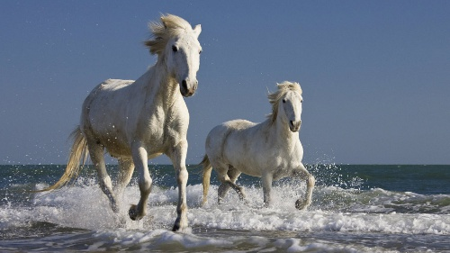
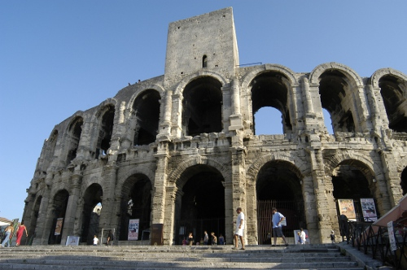
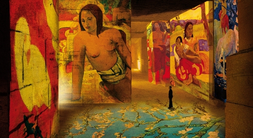
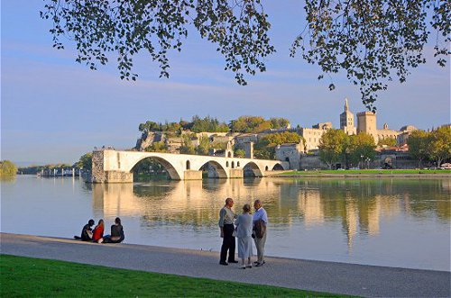
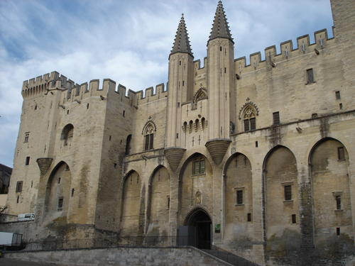

Arles-Camargue-Provence
Discover Arles – Camargue – Provence
Arles is located in south of France, in Camargue-Provence, one of the most popular tourist regions of France. Situated 35kms from the beach, Arles is listed as a UNESCO World Heritage site for its Roman and Romanesque monuments since 1981. Arles is the city with the most Roman remains after Rome. Arles is surrounded by Avignon, Pont du Gard, Orange and The Causses and the Cévennes, four famous UNESCO World Heritage sites. Arles and Provence region has always inspired artists. Van Gogh, attracted by the light in the south of France, spent 15 month in Arles and accomplished more than 300 paintings. Arles is the door of the Camargue, a triangular area where Rhône meets the sea, the Rhône delta. Camargue is a territory rich in protected environments, classified as a Biosphere Reserve by UNESCO. Camargue is a marshy island, with an area of over 930 km² (360 sq. miles), the Camargue is western Europe’s largest river delta, with exceptional biological diversity, and home to unique breeds of Camargue Horses and Camargue Bulls, and to more than 400 species of birds including Pink Flamingoes. No more than three kilometers from Arles, Alpilles offer arid landscape with picturesque villages like Fontvieille, Les Baux de Provence, Saint Remy de Provence, Le Paradou, Maussane les Alpilles… This page lists the main regions and sites to visit.

UNESCO World Heritage sites in Arles and nearby
- Arles : http://whc.unesco.org/en/list/164/
- Avignon (36kms) : http://whc.unesco.org/en/list/228/
- Pont du Gard (40kms) : http://whc.unesco.org/en/list/344/
- Orange (85kms): http://whc.unesco.org/en/list/163/
- The Causses and the Cévennes, landscapes of the Mediterranean agro-pastoral inscribed on the World Heritage List in 2011: http://whc.unesco.org/en/list/1153/

The full list of UNESCO World Heritage sites in France:

Artists:

Tourist offices and must-see
- Arles (0kms)
- Camargue (<20kms):
- Avignon (38kms): http://www.avignon-tourisme.com/menu/discover-35-2.html
- Baux de provence (20kms): http://www.lesbauxdeprovence.com/en/tourist-office
- Saintes-Maries-de-la-Mer (36kms): http://www.saintesmaries.com/en/
- Les Carrières de Lumières in Baux de Provence (20kms): http://www.carrieres-lumieres.com/en/home
- Saint Rémy de Provence (25kms): http://www.saintremy-de-provence.com/home.html
- Tarascon (17kms): http://www.tarascon.fr/tarascon-in-provence/visit.html
- Nimes (34kms): http://www.ot-nimes.fr/en/home/
- Orange (37kms): http://uk.otorange.fr/
- Pont du Gard (38kms): http://uk.ot-pontdugard.com/
- Aigues-Mortes (45kms): http://ot-aiguesmortes.com/?lang=en
- Cévennes méditerranée (35kms): http://ot-cevennes.com/
- Marseille (90kms): http://www.marseille-tourisme.com/en/discover-marseille/
- Cirque de Navacelles: http://www.ot-cevennes.com/Le-Cirque-de-Navacelles.html
